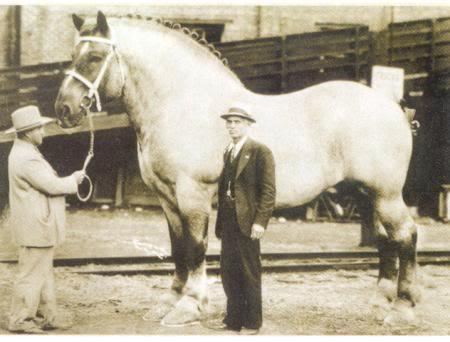
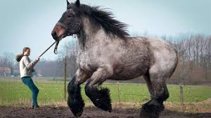

Самой маленькой лошадью, согласно документам, был жеребец Литтл Пампкин. 30 ноября 1975 г. в штате южная Каролина, США было зафиксировано что его рост составлял 35,5 см, а вес – 9,07 кг
Самым высоким признан родившийся в Великобритании в 1846 г. мерин породы шайр по кличке Сэмпсон. В 1850г. его высота в холке была равна 2,19м, а вес составлял 1524 кг.
Подковы самого крупного жеребца бельгийской породы по кличке Бруклин Сьюприм (1928-1948) были весом 3,4 кг, имели 35,5 см в поперечнике и для их изготовления требовалась полоса железа длиной 76,2 см.
В скачках с чистокровными лошадьми запрещено участвовать лошадям других пород, так как любая чистокровная лошадь на порядок сильнее и резвее любой другой лошади